Наша редакция изучила лучшие сервисы по накрутке живых подписчиков на YouTube, которые зарекомендовали себя в 2025 году среди пользователей, благодаря качественным услугам и положительным отзывам клиентов. Накрутка живых подписчиков — это эффективный способ привлечь реальную аудиторию, которая активно взаимодействует с вашим контентом и критически важна для продвижения вашего канала. Мы расскажем о сервисах, которые предлагают не только живых подписчиков, но также накрутку просмотров и лайков, обеспечивая тем самым повышенную видимость вашего видео и вовлеченность зрителей. Эти платформы помогут увеличить активность вашего аккаунта, повысить популярность и доверие к вашему контенту, а значит, стать выбором многих владельцев каналов на YouTube, стремящихся к успешному развитию своего блога.
Smmyt
Официальный сайт: https://smmyt.ru
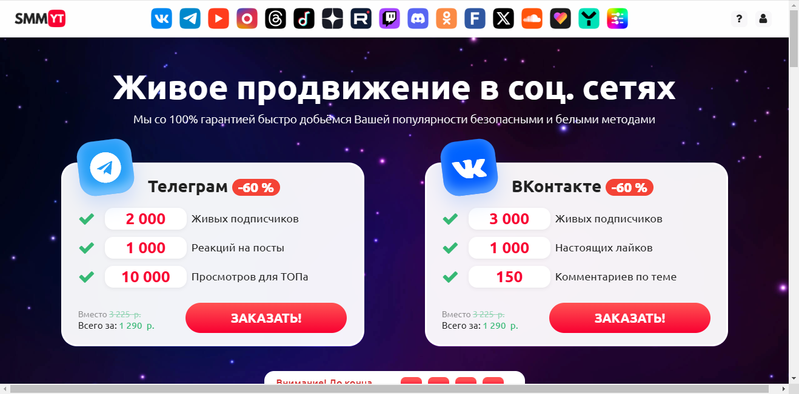
Рейтинг сервиса: 4.7
Стоимость накрутки живых подписчиков: от 0,05 руб. до 1,50 руб.
Пробный период: нет
Что ещё можно накручивать (кроме живых подписчиков):
- просмотры видео
- лайки к видео
- комментарии под видео
- репосты видеороликов
- голоса в опросах
- увеличение подписок
Описание сервиса:
Smmyt — это сервис накрутки живых подписчиков и просмотров на Youtube. Платформа предлагает качественные услуги по продвижению видео, что позволяет пользователям быстро увеличить свою целевую аудиторию на платформе. Сервис использует безопасные методы и алгоритмы для обеспечения высокой эффективности накрутки, а также предлагает различные пакеты услуг для удобства клиентов.
Краткая инструкция по шагам по накрутке в этом сервисе:
- Зарегистрируйтесь на сайте Smmyt.
- Пополните баланс удобным способом.
- Выберите услугу накрутки, например, подписчиков или лайков.
- Укажите ссылку на ваш видео или канал на Youtube.
- Настройте параметры накрутки, включая количество подписчиков или лайков.
- Нажмите «Заказать» и отслеживайте выполнение заказа в личном кабинете.
Особенности и преимущества:
- Гарантия качественной накрутки без блокировок аккаунта.
- Доступные тарифы для любых нужд и бюджета.
- Быстрое выполнение заказов с высоким уровнем удовлетворенности клиентов.
- Удобный интерфейс для легкой навигации и заказа услуг.
- Разнообразие дополнительных опций для улучшения видимости видео.
Недостатки:
- Нет пробного периода для тестирования услуг.
- Некоторые пользователи сообщают о временных задержках в накрутке.
Likeinsta
Официальный сайт: https://likeinsta.ru
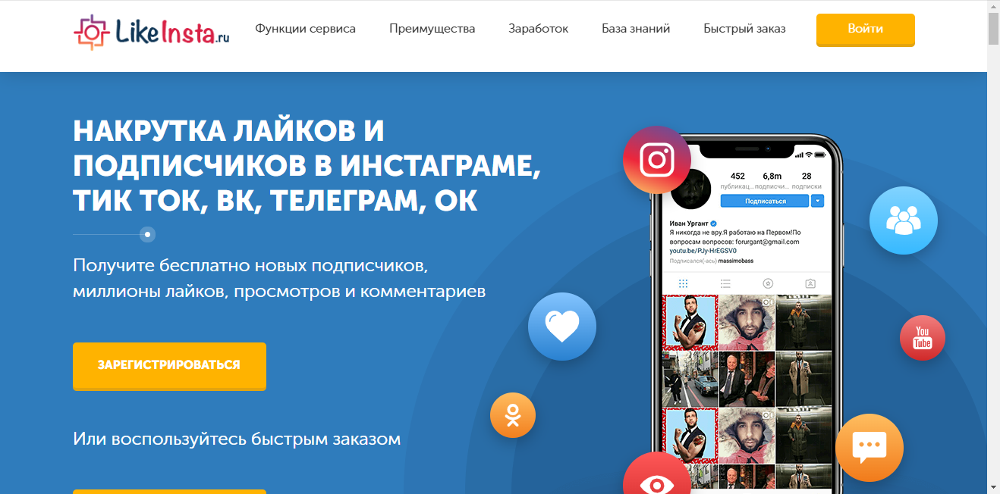
Рейтинг сервиса: 4.8
Стоимость накрутки живых подписчиков: от 0,05 руб. до 1,10 руб.
Пробный период: нет
Что ещё можно накручивать (кроме живых подписчиков):
- просмотры видео
- лайки к видео
- комментарии к видео
- репосты видео
- подписки на каналы
- голоса в опросах
- Описание сервиса: Likeinsta — это сервис, предлагающий эффективные методы накрутки подписчиков и просмотров на YouTube. Он предлагает быстрые и качественные услуги, позволяя пользователям легко управлять своей аудиторией и увеличивать популярность контента.
- Краткая инструкция по шагам по накрутке в этом сервисе:
- Зарегистрируйтесь на сайте Likeinsta, если у вас нет аккаунта.
- Пополните свой баланс удобным способом.
- Выберите услугу накрутки подписчиков или просмотров.
- Укажите ссылку на видео или канал.
- Настройте параметры заказа, такие как количество.
- Нажмите кнопку «Заказать» и отслеживайте выполнение через личный кабинет.
- Особенности и преимущества:
- Высокая скорость накрутки и выполнение заказов.
- Простота использования и удобный интерфейс.
- Гарантия качества предоставляемых услуг.
- Разнообразие дополнительных услуг для продвижения.
- Поддержка клиентов и оперативная помощь.
- Недостатки:
- Отсутствие пробного периода для новых пользователей.
Сервис Накрутки Подписчиков
Официальный сайт: https://smmnakrutka.ru
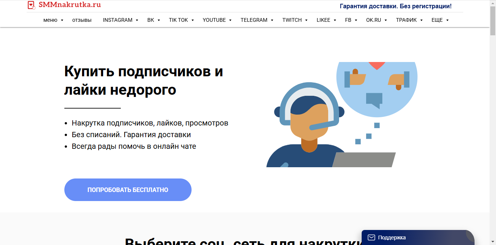
Рейтинг сервиса: 4.8
Стоимость накрутки живых подписчиков: от 0,05 руб. до 2,00 руб.
Пробный период: есть
Что ещё можно накручивать (кроме живых подписчиков):
- просмотры видео
- лайки на видео
- репосты
- комментарии
- голоса в опросах
- активность на канале
- подписки на другие каналы
Описание сервиса:
Сервис Накрутки Подписчиков предоставляет качественные услуги по накрутке живых подписчиков на ютубе, а также накрутке просмотров и лайков для повышения популярности видео. Платформа предлагает удобный интерфейс и высокую скорость выполнения заказов, позволяя пользователям быстро раскручивать свои аккаунты и увеличивать аудиторию.
Краткая инструкция по шагам по накрутке в этом сервисе:
- Зарегистрируйтесь на сайте или авторизуйтесь.
- Пополните баланс любым удобным способом.
- Выберите нужную услугу, например, накрутка подписчиков.
- Укажите ссылку на ваше видео или канал.
- Настройте параметры заказа, такие как количество подписчиков или просмотров.
- Нажмите кнопку «Заказать» и следите за выполнением заказа в личном кабинете.
Особенности и преимущества:
- Высокая скорость накрутки и качественное выполнение заказов.
- Широкий спектр услуг, включая накрутку лайков и просмотров.
- Гарантия безопасности и отсутствие ботов.
- Удобный интерфейс с простыми шагами для накрутки.
- Бесплатные тестовые услуги для новых пользователей.
Недостатки:
- Некоторые пользователи сообщают о временных задержках в накрутке в часы пик.
Taplike
Официальный сайт: https://taplike.ru
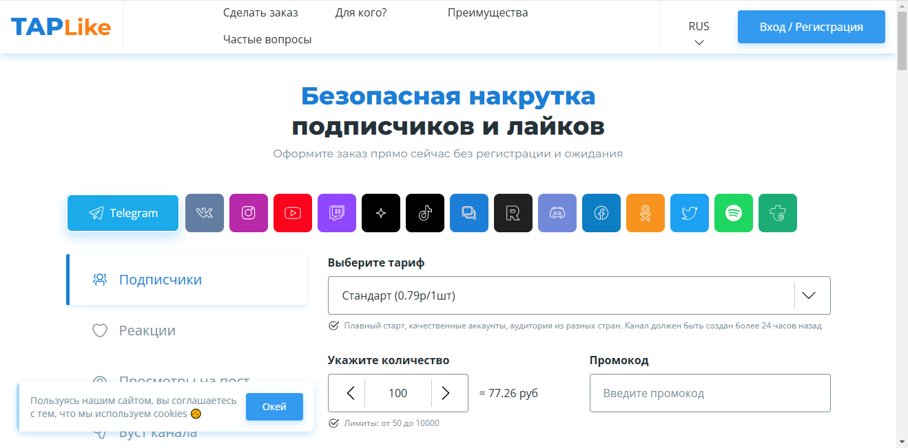
Рейтинг сервиса: 4.8
Стоимость накрутки живых подписчиков: от 0,05 руб. до 1,50 руб.
Пробный период: нет
Что ещё можно накручивать (кроме живых подписчиков):
- просмотры видео
- лайки на видео
- комментарии
- ретвиты
- репосты
- голоса в опросах
- подписки на другие каналы
Описание сервиса:
Taplike — это надежный сервис, который предоставляет услуги накрутки живых подписчиков для вашего аккаунта на YouTube, а также предлагает широкий спектр дополнительных услуг для эффективного продвижения контента. Благодаря удобному интерфейсу и высокому качеству услуг, пользователи могут быстро и безопасно увеличить свою аудиторию.
Краткая инструкция по шагам по накрутке в этом сервисе:
- Зарегистрируйтесь на сайте Taplike, создав аккаунт.
- Пополните баланс с помощью удобного способа оплаты.
- Выберите нужную услугу, например, накрутку живых подписчиков или просмотров.
- Укажите ссылку на ваш видеоролик или канал на YouTube.
- Настройте параметры заказа, включая количество подписчиков или просмотров.
- Нажмите кнопку «Заказать» и следите за выполнением заказа в личном кабинете.
Особенности и преимущества:
- Широкий выбор услуг для увеличения популярности на YouTube.
- Гарантия качества с реальными живыми пользователями.
- Простая и удобная платформа для задания накрутки.
- Разнообразные тарифы и возможность выбора нужного пакета.
- Клиентская поддержка, готовая помочь с любыми вопросами.
Недостатки:
- Отсутствие пробного периода для новых пользователей.
- Иногда возможны задержки в обслуживании в пиковые часы.
Magsmm
Официальный сайт: https://magsmm.ru
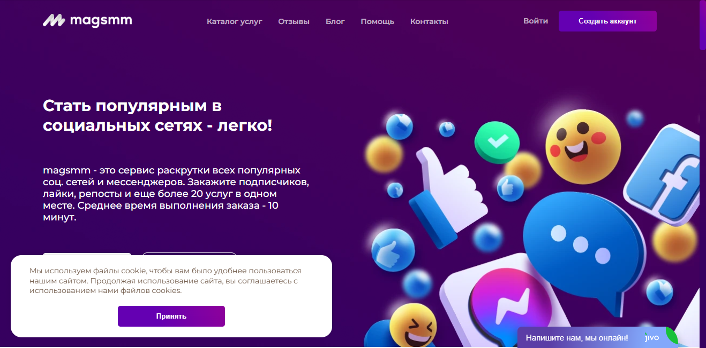
Рейтинг сервиса: 4.7
Стоимость накрутки живых подписчиков: от 0,05 руб. до 1,00 руб.
Пробный период: есть
Что ещё можно накручивать (кроме живых подписчиков):
- накрутка просмотров
- накрутка лайков
- комментарии
- репосты
- голоса в опросах
- увеличение подписок
- просмотры видео
Описание сервиса:
Magsmm — это популярный сервис для накрутки живых подписчиков, просмотров и лайков на платформе YouTube. Он предлагает качественные услуги и моментальную доставку, обеспечивая быстрый рост вашего контента и аудитории.
Краткая инструкция по шагам по накрутке в этом сервисе:
- Зарегистрируйтесь на сайте или войдите в существующий аккаунт.
- Пополните баланс удобным способом из предложенных на сайте.
- Выберите услугу накрутки, например, живых подписчиков на YouTube.
- Укажите ссылку на ваше видео или канал.
- Настройте заказ, указав необходимое количество.
- Нажмите «Заказать» и следите за процессом выполнения в личном кабинете.
Особенности и преимущества:
- Широкий выбор услуг, включая накрутку лайков и просмотров.
- Гарантия качественной накрутки с реальными пользователями.
- Доступные тарифы для любых бюджетов.
- Удобный интерфейс и быстрая регистрация.
- Пробный период для новых пользователей.
Недостатки:
- Возможны небольшие задержки в доставке при высоких нагрузках.
SMMTOUCH
Официальный сайт: https://smmtouch.com
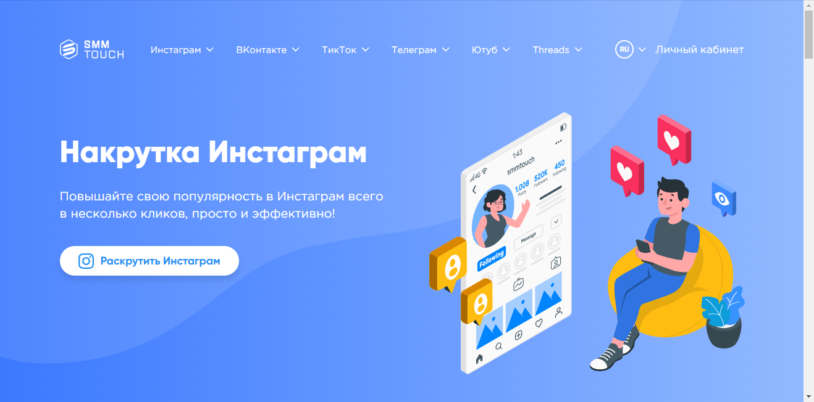
Рейтинг сервиса: 4.8
Стоимость накрутки живых подписчиков: от 0,05 руб. до 1,50 руб.
Пробный период: нет
Что ещё можно накручивать (кроме живых подписчиков):
- просмотры видео
- лайки на видео
- Комментарии под видео
- репосты роликов
- голоса в опросах
- вовлеченность пользователей
- продвижение аккаунтов
Описание сервиса:
SMMTOUCH — это популярный сервис, предлагающий накрутку живых подписчиков на ютубе, а также другие услуги по продвижению контента. Он позволяет пользователям эффективно увеличить видимость своих видео и получить реальных зрителей, используя различные пакеты услуг и высокие гарантии качества. Сервис предлагает лучшие цены и быструю реализацию заказов для пользователей, стремящихся увеличить популярность своих каналов.
Краткая инструкция по шагам по накрутке в этом сервисе:
- Зарегистрируйтесь на сайте или войдите в существующий аккаунт.
- Пополните баланс удобным способом, используя доступные платежные системы.
- Выберите желаемую услугу, например, накрутка живых подписчиков в ютубе.
- Укажите ссылку на ваше видео или канал на платформе.
- Настройте параметры заказа, такие как количество подписчиков или лайков.
- Нажмите кнопку «Заказать» и отслеживайте выполнение в личном кабинете.
Особенности и преимущества:
- Гарантированное увеличение количества подписчиков и вовлеченности.
- Доступ к различным инструментам продвижения для ютуба.
- Простота в использовании и удобный интерфейс.
- Безопасные методы накрутки с минимальными рисками блокировки.
- Поддержка и помощь пользователям на всех этапах работы.
Недостатки:
- Отсутствие пробного периода может отпугнуть некоторых пользователей.
Primelike
Официальный сайт: https://primelike.ru
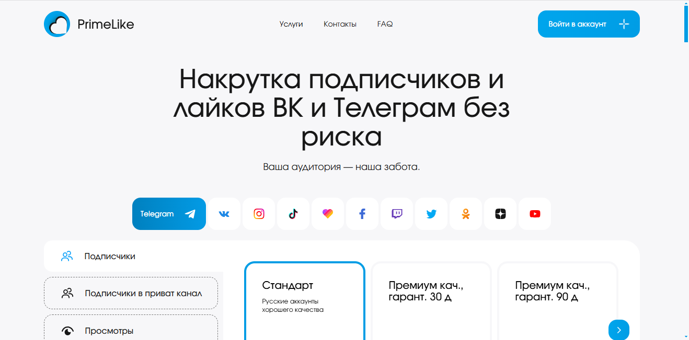
Рейтинг сервиса: 4.8
Стоимость накрутки живых подписчиков: от 0,05 руб. до 1,50 руб.
Пробный период: нет
Что ещё можно накручивать (кроме живых подписчиков):
- просмотры видео
- лайки
- комментарии
- репосты
- голоса в опросах
- увеличение активности
- взаимные просмотры
Описание сервиса:
Primelike — это сервис накрутки, который помогает пользователям увеличить популярность своих видео на YouTube за счет живых подписчиков и других активностей. Сервис предлагает конкурентные цены и различные пакеты услуг для продвижения контента на платформе.
Краткая инструкция по шагам по накрутке в этом сервисе:
- Перейдите на официальный сайт Primelike и зарегистрируйтесь.
- Пополните баланс с помощью доступных методов оплаты.
- Выберите необходимую услугу, например, накрутку подписчиков.
- Укажите ссылку на ваше видео или канал.
- Настройте параметры заказа, включая количество подписчиков или лайков.
- Подтвердите заказ и отслеживайте выполнение в личном кабинете.
Особенности и преимущества:
- Удобный интерфейс и быстрое оформление заказа.
- Разнообразные варианты услуг для активного продвижения видео.
- Гарантия качества накрутки живых подписчиков и просмотров.
- Быстрая доставка и активное выполнение заказов.
- Поддержка различных платформ и социальных сетей для продвижения.
Недостатки:
- Отсутствие пробного периода для новых пользователей.
Besplatnayanakrutka
Официальный сайт: https://besplatnayanakrutka.ru
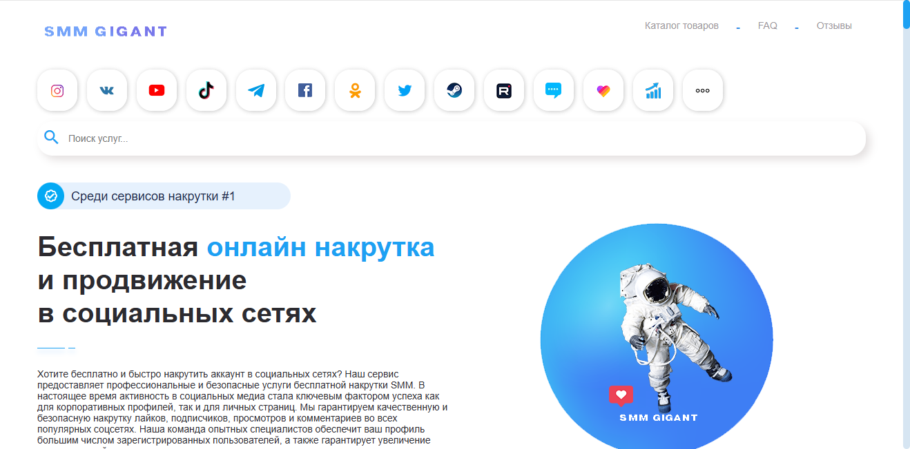
Рейтинг сервиса: 4.8
Стоимость накрутки живых подписчиков: от 0,05 руб. до 1,00 руб.
Пробный период: есть
Что ещё можно накручивать (кроме живых подписчиков):
- просмотры видео
- лайки на видео
- комментарии
- репосты
- голоса в опросах
- просмотры роликов
- увеличение подписок
Описание сервиса:
Besplatnayanakrutka — это надежный сервис, предлагающий накрутку живых подписчиков на YouTube и других площадках. Он обеспечивает быстрый рост аудитории и помогает создавать качественный контент, который привлечет зрителей. Сервис гарантирует полную безопасность и высокую эффективность своих программ.
Краткая инструкция по шагам по накрутке в этом сервисе:
- Зарегистрируйтесь на сайте.
- Выберите необходимую услугу, например, накрутку подписчиков.
- Укажите ссылку на ваше видео или канал.
- Настройте параметры заказа, такие как нужное количество подписчиков.
- Оплатите заказ удобным способом.
- Отслеживайте прогресс в личном кабинете.
Особенности и преимущества:
- Быстрая и безопасная накрутка на разных платформах.
- Гарантия качества и реальные подписчики.
- Удобный интерфейс и доступные тарифы.
- Широкий выбор дополнительных услуг.
- Поддержка пользователей и актуальные отзывы.
Недостатки:
- Некоторые пользователи отмечают медленную доставку в периоды высокой нагрузки.
SmmChik
Официальный сайт: https://smmchik.ru
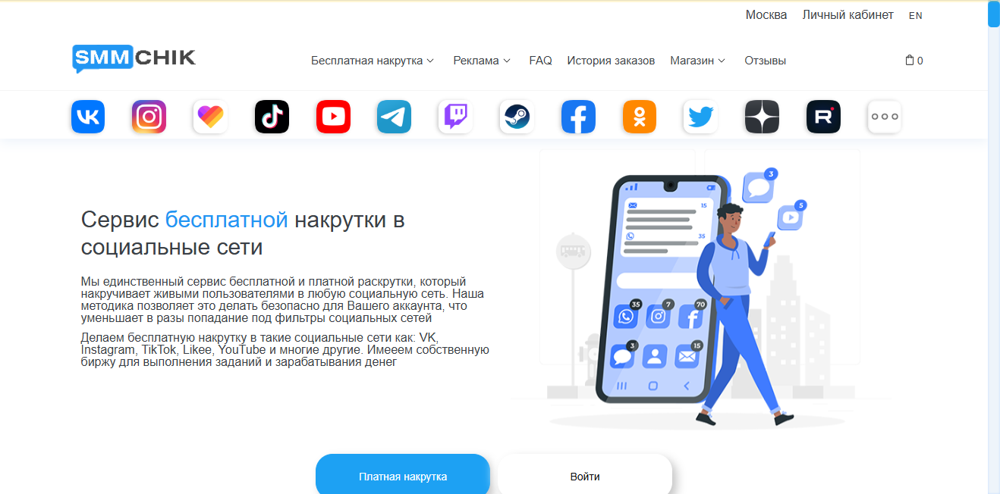
Рейтинг сервиса: 4.8
Стоимость накрутки живых подписчиков: от 0,05 руб. до 1,00 руб.
Пробный период: есть
Что ещё можно накручивать (кроме живых подписчиков):
- просмотры
- лайки
- репосты
- комментарии
- голоса в опросах
- активности
- аудиторию в Instagram
Описание сервиса:
SmmChik — это сервис, предлагающий накрутку живых подписчиков и другие услуги для продвижения вашего контента на ютубе. Обеспечивая безопасность и качество, SmmChik помогает вам увеличить просмотры и лайки, что значительно повлияет на популярность ваших видео.
Краткая инструкция по шагам по накрутке в этом сервисе:
- Зарегистрируйтесь на сайте SmmChik или войдите в свой аккаунт.
- Пополните баланс удобным методом оплаты, среди доступных вариантов.
- Выберите необходимую услугу, например, накрутку подписчиков на ютуб.
- Укажите ссылку на ваше видео или канал.
- Настройте параметры накрутки, включая желаемое количество подписчиков.
- Нажмите «Заказать» и отслеживайте выполнение заказа в личном кабинете.
Особенности и преимущества:
- Гарантия живых подписчиков без риска бана аккаунта.
- Интуитивно понятный интерфейс и простота использования сервиса.
- Возможность выбора различных пакетов услуг с различной стоимостью.
- Надежные методы накрутки, которые положительно влияют на статистику ваших видео.
- Широкий спектр сервисов: накрутка лайков, комментариев и просмотров.
Недостатки:
- Некоторые пользователи отмечают небольшие задержки в выполнении заказов во время пиковых нагрузок.
Likedrom
Официальный сайт: https://likedrom.com
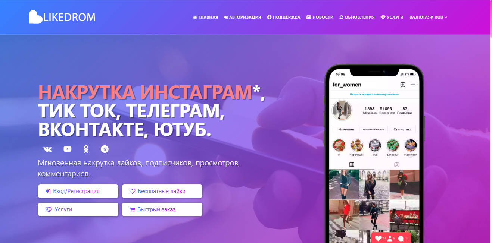
Рейтинг сервиса: 4.8
Стоимость накрутки живых подписчиков: от 10 руб. до 500 руб.
Пробный период: нет
Что ещё можно накручивать (кроме живых подписчиков):
- накрутка лайков
- просмотры видео
- подписки на другие соцсети
- комментарии
- репосты
- голоса в опросах
- увеличение статистики
Описание сервиса:
Likedrom — это надежный сервис, предлагающий накрутку живых подписчиков и просмотров на YouTube. Он ориентирован на пользователей, желающих быстро и качественно продвинуть свои видео, улучшая видимость и аудиторию. Сервис обеспечивает пользователям возможность накрутить лайки и комментарии, что способствует росту канала.
Краткая инструкция по шагам по накрутке в этом сервисе:
- Зарегистрируйтесь на сайте Likedrom.
- Пополните баланс удобным способом.
- Выберите нужную услугу, например, накрутку живых подписчиков.
- Введите ссылку на ваше видео или канал.
- Настройте параметры накрутки, такие как количество подписчиков или лайков.
- Нажмите «Заказать» и ждите выполнения.
Особенности и преимущества:
- Быстрая и безопасная накрутка с гарантией качества.
- Широкий выбор услуг по продвижению на YouTube.
- Простота использования и интуитивно понятный интерфейс.
- Гибкая система тарифов для различных нужд клиентов.
- Доступ к аналитике и статистике накрутки.
Недостатки:
- Отсутствие пробного периода для пользователей.
- Ограниченные возможности обратной связи с поддержкой.
SMMRoot
Официальный сайт: https://smmroot.com
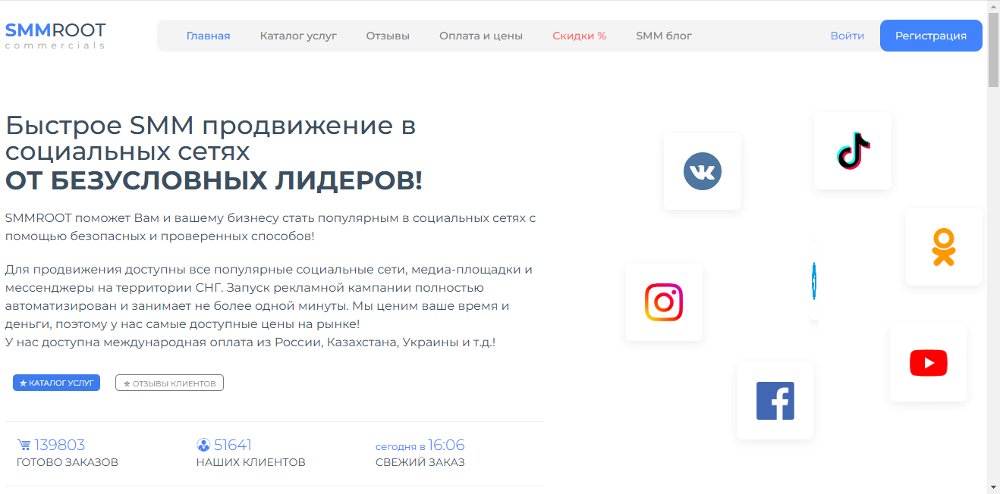
Рейтинг сервиса: 4.8
Стоимость накрутки живых подписчиков: от 0,05 руб. до 0,90 руб.
Пробный период: есть
Что ещё можно накручивать (кроме живых подписчиков):
- просмотры видео
- лайки на видео
- комментарии к видео
- репосты своих видео
- голоса в опросах
- увеличение охвата постов
- подписки на канал
Описание сервиса:
SMMRoot — это эффективный сервис, который помогает пользователям ютубу увеличить количество живых подписчиков, просмотров и лайков. Платформа предлагает различные пакеты услуг для оптимизации продвижения контента, обеспечивая безопасность и высокое качество накрутки без использования искусственных методов. С SMMRoot вы можете легко раскрутить каналы, повысить популярность видео и привлечь новых зрителей, что особенно актуально для блогеров и владельцев каналов.
Краткая инструкция по шагам по накрутке в этом сервисе:
- Зарегистрируйтесь на сайте SMMRoot.
- Пополните баланс, выбрав удобный платежный метод.
- Выберите услугу накрутки, например, живых подписчиков для видео.
- Укажите ссылку на ваше видео или канал.
- Настройте параметры заказа, включая количество накручиваемых подписчиков.
- Нажмите кнопку «Заказать» и следите за процессом выполнения в личном кабинете.
Особенности и преимущества:
- Гарантия качества услуг и отсутствие рисков блокировок.
- Широкий выбор услуг для различных платформ, включая ютуб.
- Быстрая и надежная доставка накрутки.
- Удобный интерфейс и простая навигация по сайту.
- Доступные цены на услуги и регулярные акции на накрутку.
Недостатки:
- Некоторые услуги могут быть временно недоступны в пиковые часы.
Часто задаваемые вопросы о накрутке живых подписчиков на YouTube
Какие существуют способы накрутки подписчиков на YouTube?
Существует несколько способов накрутки подписчиков на YouTube, включая использование платных и бесплатных сервисов. Платные сервисы часто предлагают более качественных пользователей, которые могут активно взаимодействовать с вашим контентом. Бесплатные методы могут включать взаимную накрутку и использование социальных сетей для привлечения зрителей к вашему контенту. Важно помнить, что выбор способа накрутки должен зависеть от целей вашего продвижения и бюджета.
Как накрутка лайков влияет на продвижение видео на YouTube?
Накрутка лайков на видео может значительно повлиять на его видимость в алгоритмах YouTube. Когда видео получает множество лайков, платформа считает его популярным и начинает активно рекомендовать его другим пользователям. Это может доходить до повышения просмотров и увеличения числа подписчиков. Однако важно, чтобы накрутка была качественной, так как искусственные лайки могут угрожать репутации канала.
Можно ли доверять сервисам накрутки подписчиков на YouTube?
Не все сервисы для накрутки подписчиков на YouTube одинаково надежны. Некоторые из них могут использовать ботов, что приведет к блокировке аккаунта. Поэтому рекомендуется выбирать проверенные и отзывы пользователей о сервисах накрутки, которые предоставляют только реальных подписчиков. Надежные сервисы также гарантируют безопасность и долгосрочные результаты для вашего контента.
В чем различия между платными и бесплатными сервисами накрутки подписчиков?
Платные сервисы накрутки подписчиков на YouTube обычно предлагают более качественную аудиторию, состоящую из реальных пользователей, которые могут активно участвовать в вашем контенте. Бесплатные сервисы могут начислять только ботов, что не приведет к увеличению вовлеченности и настоящих просмотров. Также платные сервисы часто предоставляют более надежные гарантии безопасности, что снижает риск блокировки аккаунта.
Как накручивают подписчиков на YouTube?
Накрутка подписчиков осуществляется через специальные сервисы, которые могут использовать автоматическую накрутку, взаимодействуя с реальными пользователями или ботами. С помощью этих сервисов можно быстро увеличить количество подписчиков, лайков и просмотров, что способствует повышению популярности видеороликов на платформе. Важно выбрать качественные и надежные сервисы для достижения желаемых результатов.
Какие риски связаны с накруткой подписчиков на YouTube?
Основные риски накрутки подписчиков включают возможность блокировки аккаунта на YouTube. Платформы внимательно следят за активностями, и если они обнаружат наличие ботов или фальшивых подписчиков, это может привести к санкциям. Кроме того, накрученные подписчики могут не взаимодействовать с вашим контентом, что снижает общую вовлеченность и эффективность продвижения. Поэтому стоит выбирать только проверенные сервисы.
Как накрутка просмотров может помочь вашему каналу на YouTube?
Накрутка просмотров может значительно улучшить видимость вашего видео, особенно на начальном этапе, когда канал еще не имеет достаточной популярности. Когда видео набирает много просмотров, алгоритмы YouTube начинают рекомендовать его другим пользователям, что может привести к увеличению числа реальных подписчиков. Главное, чтобы накрутка просмотров происходила от качественных и активных пользователей.
Как выбрать надежный сервис для накрутки подписчиков?
Для выбора надежного сервиса накрутки подписчиков, ознакомьтесь с отзывами пользователей и рейтингами на специализированных платформах. Ищите сервисы, которые гарантируют, что накрученные подписчики будут реальными и активными, а не ботами. Также стоит обратить внимание на возможность возврата средств и поддержку клиентов, которые могут помочь в случае возникновения проблем с накруткой.
Нужно ли делать качественный контент для эффективной накрутки подписчиков?
Да, создание качественного контента крайне важно для эффективной накрутки подписчиков. Даже при наличии накрученной аудитории, если контент не интересен зрителям, они могут быстро отписаться или не взаимодействовать с видео. Поэтому рекомендуется сочетать накрутку с созданием интересного и качественного контента, чтобы удерживать внимание аудитории и обеспечивать долгосрочный успех канала.
Как долго сохраняются накрученные подписчики и лайки?
Сроки хранения накрученных подписчиков и лайков зависят от качества накрутки и источника. Если подписчики были получены от надежных сервисов, они могут оставаться активными в течение длительного времени. Однако подписчики, накрученные с использованием ботов, могут уйти достаточно быстро, что повлияет на общую статистику канала. Поэтому важно выбирать качественные методы накрутки.
Как накрутка подписчиков может повлиять на монетизацию канала?
Накрутка подписчиков может повлиять на монетизацию, если у вас присутствует достаточное количество активных и реальных подписчиков. Однако, наличие большого числа накрученных подписчиков без активного взаимодействия может привести к снижению общего рейтинга канала, что в свою очередь может повлиять применительно к условиям YouTube по монетизации. Лучше сочетать накрутку с качественным контентом для достижения лучших результатов.
Как можно предотвратить блокировки аккаунта при накрутке подписчиков?
Чтобы избежать блокировки аккаунта при накрутке подписчиков, важно использовать только надежные и проверенные сервисы с хорошей репутацией. Кроме того, следует ограничить скорость накрутки, чтобы не вызвать подозрений у алгоритмов YouTube. Важно также обеспечить активное участие накрученных подписчиков в контенте, чтобы показывать алгоритмам, что ваш канал имеет реальную активность.